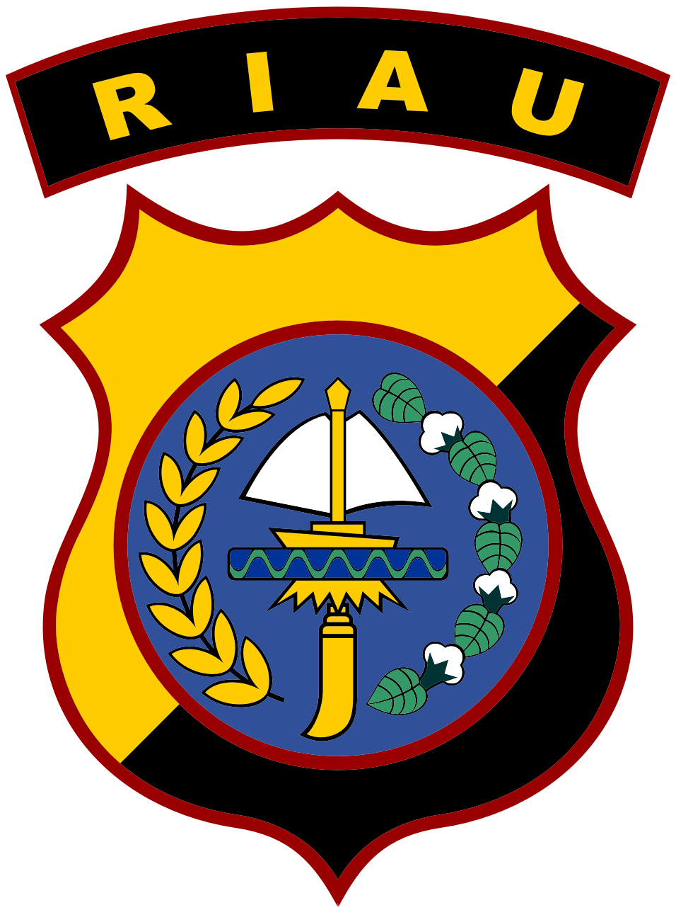
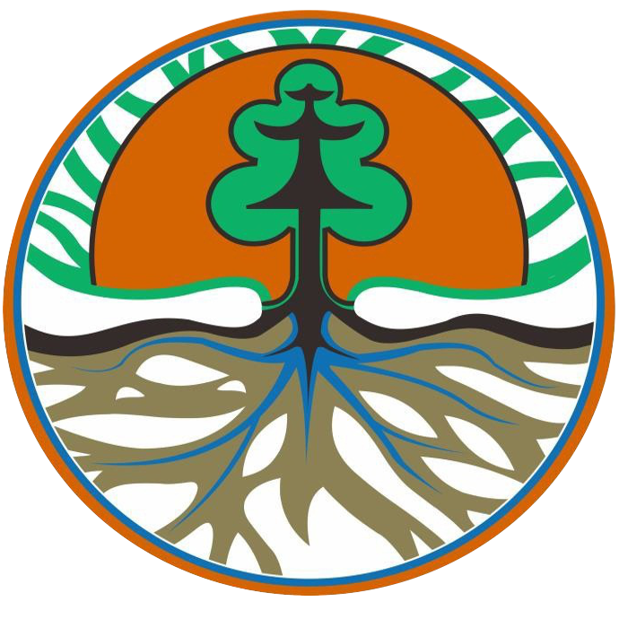
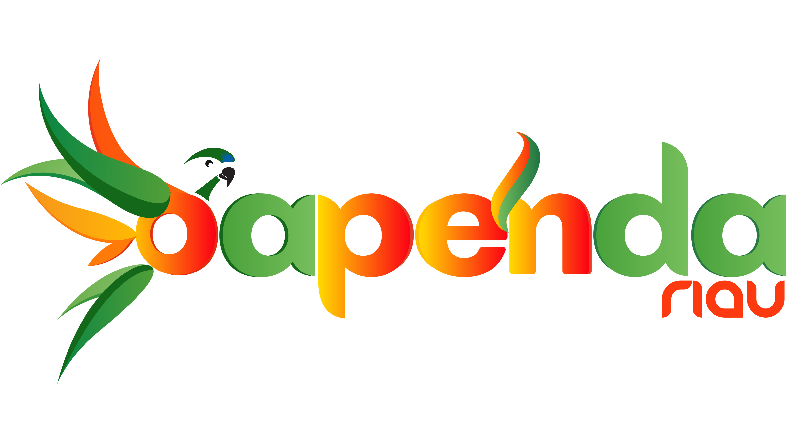
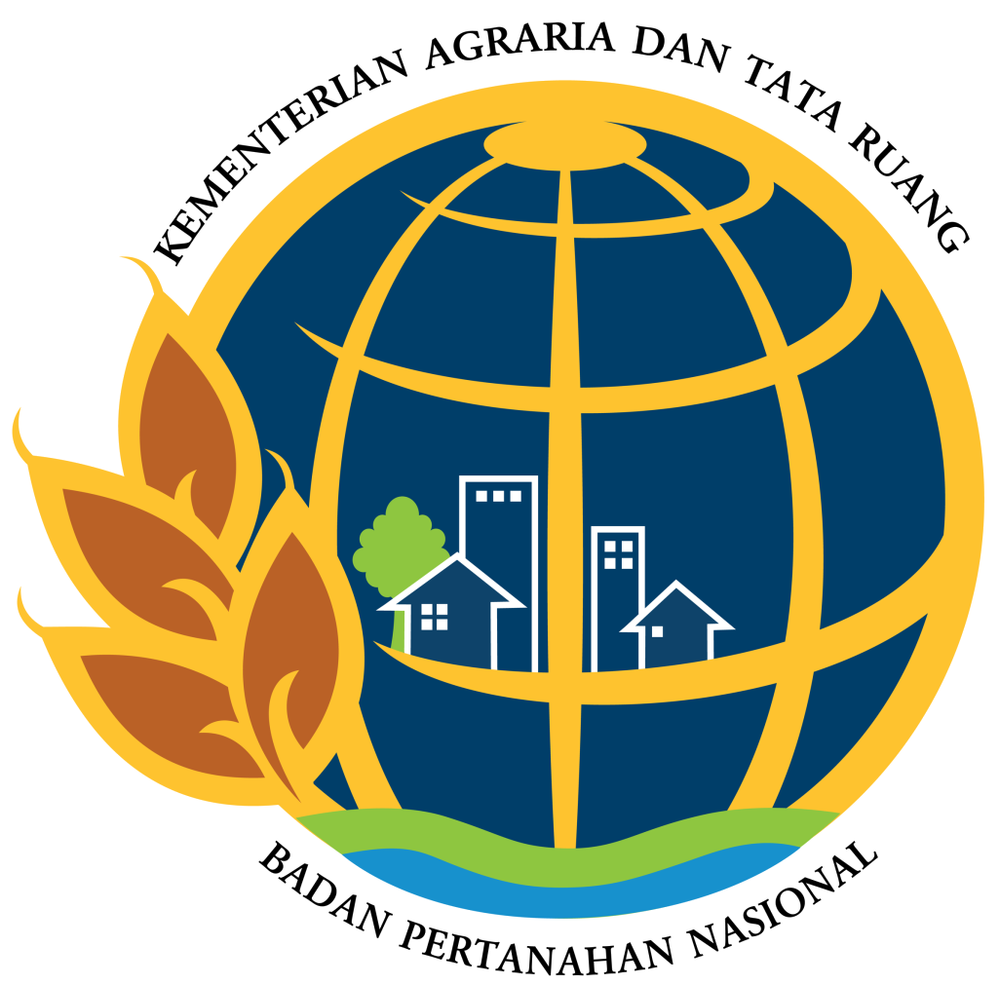
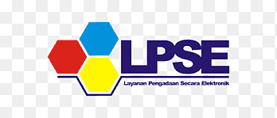
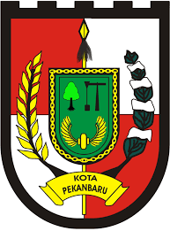
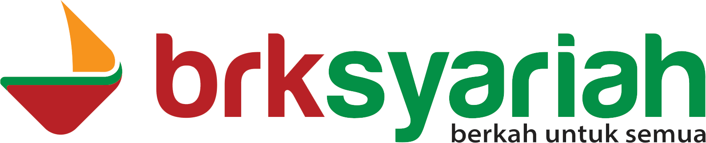
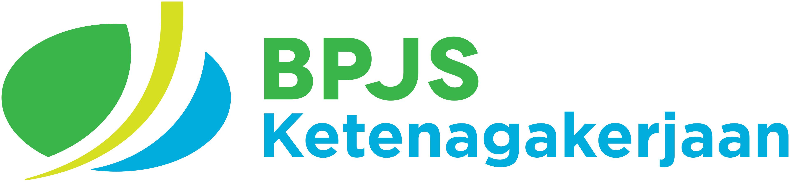

Izin terbit
79
Pengunjung
584 orang
Retribusi
Rp 3,206 Jt
Tenaga kerja terserap
5 orang
Potensi investasi
Rp 34,704 M
Layanan Perizinan DPMPTSP
Komposisi izin terbit hari ini
79izin
- NIB7088,6%
- PBG22,5%
- Lainnya78,9%
- Izin Kesehatan00%
Penerimaan retribusi
Hari ini
Rp 3,206 Jt
Januari s.d. sekarang
Rp 10,769 M
Penyerapan tenaga kerja
Hari ini
5 orang
Januari s.d. sekarang
4.429 orang
Potensi investasi
Hari ini
Rp 34,704 M
- PMA
- 1 Proyek
- Rp 12,03 M
- PMDN
- 169 Proyek
- Rp 22,67 M
34,7%
65,3%
Porsi nilai investasi
Januari s.d. sekarang
Rp 13,272 T
- PMA
- 126 Proyek
- Rp 2,302 T
- PMDN
- 37.164 Proyek
- Rp 10,970 T
17,3%
82,7%
Porsi nilai investasi
Kunjungan Layanan
Porsi pengunjung per instansi
584pengunjung
- Disdukcapil33156,7%
- Polda559,4%
- BPJS Kesehatan457,7%
- DPMPTSP417,0%
- BRI315,3%
- Samsat274,6%
- Lainnya (11 instansi)549,2%
Jumlah pengunjung semua instansi
- DisdukcapilKota Pekanbaru331

PoldaRiau55- BPJS Kesehatan45
- DPMPTSPKota Pekanbaru41
- BRIBank Rakyat Indonesia31
- SamsatBapenda Prov. Riau – Jasa Raharja27
- ImigrasiKelas I TPI Pekanbaru11

DLHKKota Pekanbaru9- DJPDirektorat Jenderal Pajak9
- Dinas PUPRKota Pekanbaru9

BapendaKota Pekanbaru6
BPNKota Pekanbaru5
LPSEKota Pekanbaru1
DinkesKota Pekanbaru1
BRKSyariah1
BPJS Ketenagakerjaan1- DishubKota Pekanbaru1